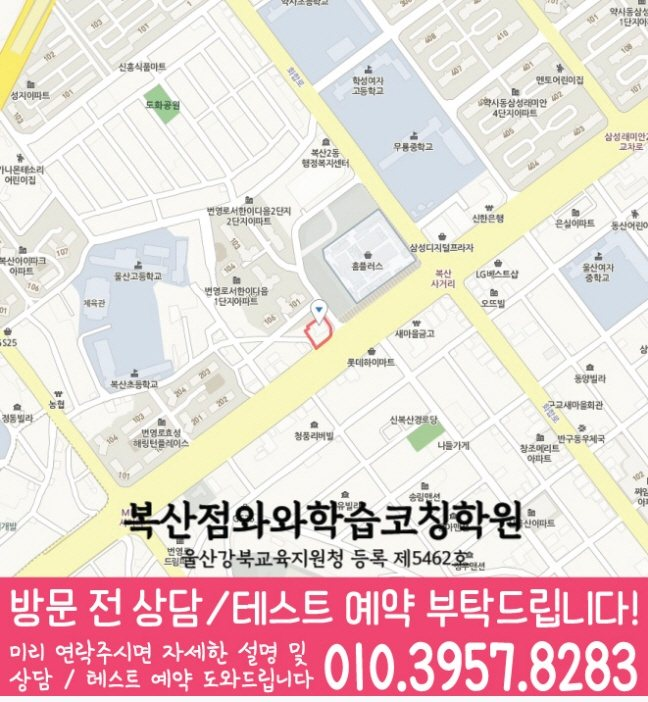

MIDDLE MATH
복산동 중등 수학학원
복산동 중등 수학학원 상담 전 개념 연결과 선수 개념·단원 연결 풀이 기록과 학교 시험 학습 순서, 확인된 센터·가능 학년 정보를 살펴보세요.
01 Quick answer
복산동 중등 수학: 시험 성적 변화의 원인 점검을 위한 학습 확인 기준
‘시험 성적 변화의 원인 점검을 위한 학습 확인 기준’이 필요한 복산동 중학생이라면 개념 설명과 첫 풀이 흔적을 함께 확인하세요. 출발 자료: 최근 시험지에서 ‘개념 설명 메모와 대표 문제에서 해당 공식을 선택한 이유’와 ‘최근 문제에서 다시 필요해진 선수 개념과 현재 단원 풀이가 끊긴 위치’가 드러난 위치를 한 곳씩 표시하세요. 바꿀 행동: ‘정의·조건·대표식을 한 줄씩 연결한 뒤 조건이 바뀐 문제에 같은 개념을 적용하기’를 먼저 하고 ‘막힌 문제에 필요한 앞 개념만 짧게 복습하고 현재 문제로 돌아와 연결 이유를 적기’는 별도 문제에서 연습하세요. 일주일 뒤: ‘풀이를 보지 않고 개념의 적용 조건과 사용 이유를 설명하는지’와 ‘단원명이 달라도 필요한 선수 개념을 스스로 찾아 현재 풀이에 적용하는지’에 학생이 직접 답하는지 확인하세요.
확인 기준
복산동 상담 전에는 개념 연결 자료와 선수 개념·단원 연결 재확인 질문을 준비하고 등록 조건은 별도 표에 둡니다.



010-6839-8283학습 답변 요약
핵심 주제는 ‘시험 성적 변화의 원인 점검을 위한 학습 확인 기준’입니다. 개념 연결과 선수 개념·단원 연결의 출발 상태를 확인하고 오답 원인·재풀이와 조건 해석·식 세우기의 실행 기록과 학교·센터 사실을 분리해 살펴봅니다.
복산동 중등 수학 진단: 시험 성적 변화의 원인 점검을 위한 학습 확인 기준
복산동 중등 수학의 핵심 질문은 ‘시험 성적 변화의 원인 점검을 위한 학습 확인 기준’입니다. 최근 점수보다 먼저 ‘공식의 이름은 알지만 적용 조건과 개념 사이의 관계를 자기 말로 설명하지 못하는지’를 시험지의 실제 표시와 대조하세요.
이어 ‘현재 단원의 문제에서 이전 학년·앞 단원의 개념이 필요한 지점을 알아보지 못하는지’도 별도 질문으로 남기고 답변과 풀이 흔적이 어긋난 지점을 찾아 개념 연결과 선수 개념·단원 연결의 순서를 현실적으로 정하세요. 일주일 뒤에는 ‘시험 성적 변화의 원인 점검을 위한 학습 확인 기준’에 해당하는 새 문제도 혼자 시작하는지 다시 확인합니다.
개념 연결과 선수 개념 연결을 보여 주는 두 가지 학습 자료
최근 시험지와 교재에서 ‘개념 설명 메모와 대표 문제에서 해당 공식을 선택한 이유’를 먼저 확인하고 ‘최근 문제에서 다시 필요해진 선수 개념과 현재 단원 풀이가 끊긴 위치’를 다른 색으로 표시해 정답보다 판단이 바뀐 위치를 기록하세요.
다음 점검에서는 숫자와 조건이 바뀐 새 문제를 사용하고 ‘풀이를 보지 않고 개념의 적용 조건과 사용 이유를 설명하는지’와 ‘단원명이 달라도 필요한 선수 개념을 스스로 찾아 현재 풀이에 적용하는지’에 같은 기준으로 답하는지 봅니다. 첫 기록과 비교하면 학습 방향의 변화를 확인하기 쉽습니다.
개념 연결과 선수 개념 연결의 내신 일정과 재확인일을 나누는 기준
내신 기록에는 범위·개념·유형·서술형을, 누적 유형 문제 기록에는 유형·근거·소요 시간을 적습니다. 두 기록 모두 ‘내신 범위의 필수 개념과 누적 유형 문제에서 다시 등장한 선수 개념을 구분해 연결하는 기준’과 ‘내신 범위의 진도와 여러 단원이 섞인 누적 문제에 필요한 선수 개념 보완을 따로 배치하는 기준’ 중 실제 자료에 맞는 기준을 고르세요.
정해진 학교 범위와 처음 보는 문제에서 개념 연결과 선수 개념·단원 연결이 각각 어떻게 드러나는지 확인하세요. 자료별 완료 기준으로 시험 전후의 우선순위를 다시 세웁니다.
시험 달력에는 ‘시험 성적 변화의 원인 점검을 위한 학습 확인 기준’에 필요한 개념 연결 확인일과 선수 개념·단원 연결 다음 점검일을 따로 표시하세요. 점수 확인이 끝나면 개념 연결과 선수 개념·단원 연결의 기록을 대조하고 독립 설명이 끊긴 영역의 분량만 조정하세요.
복산동 이용 조건을 확인한 뒤 개념 연결 질문을 비교하는 방법
상담 준비용 중학교 명칭이 공개돼 있지 않습니다. 재학 학교·시험 범위·현재 진도를 직접 알려 주세요.
제공 자료의 수학 가능 학년 표기는 중1·중2·중3이며 오답 원인·재풀이와 조건 해석·식 세우기 관련 반 구성과 현재 시간표는 별도 확인 항목입니다. 페이지가 안내하는 센터명은 와와학습코칭센터 복산점, 제공 주소는 울산 중구 번영로 461 B2동 7입니다. 와와학습코칭센터 복산점 상담을 마친 뒤에는 페이지의 교습비 자료와 실제 시간표, 통학에 걸리는 시간을 차례로 확인합니다.
한 가지 풀이 병목부터 시작하는 개념 연결 7일 계획
주간 계획표 첫 줄에 ‘개념 설명 메모와 대표 문제에서 해당 공식을 선택한 이유’를 적습니다. 이후 ‘정의·조건·대표식을 한 줄씩 연결한 뒤 조건이 바뀐 문제에 같은 개념을 적용하기’를 실행하고 실제로 끝낸 날짜와 수정한 이유를 기록하세요.
다음 점검 질문은 ‘풀이를 보지 않고 개념의 적용 조건과 사용 이유를 설명하는지’입니다. 답이 불분명하면 ‘정의·조건·대표식을 한 줄씩 연결한 뒤 조건이 바뀐 문제에 같은 개념을 적용하기’의 설명 단계를 보완하고, 분명하면 ‘막힌 문제에 필요한 앞 개념만 짧게 복습하고 현재 문제로 돌아와 연결 이유를 적기’를 다음 주 행동으로 정합니다. ‘시험 성적 변화의 원인 점검을 위한 학습 확인 기준’의 첫 행동은 ‘정의·조건·대표식을 한 줄씩 연결한 뒤 조건이 바뀐 문제에 같은 개념을 적용하기’를 먼저 하고 ‘막힌 문제에 필요한 앞 개념만 짧게 복습하고 현재 문제로 돌아와 연결 이유를 적기’는 별도 문제에서 연습하세요. 다음 판단에서는 ‘풀이를 보지 않고 개념의 적용 조건과 사용 이유를 설명하는지’와 ‘단원명이 달라도 필요한 선수 개념을 스스로 찾아 현재 풀이에 적용하는지’에 학생이 직접 답하는지 확인하세요.
선수 개념 연결 확인 질문과 센터 이용 조건을 나누는 방법
시험지에서 막힌 위치를 표시해 상담에 가져갑니다. ‘공식 암기와 개념 이해를 어떤 질문과 풀이 기록으로 나누어 확인하는지’를 먼저 묻고 ‘진도를 되돌릴 때 전체 복습이 아니라 필요한 선수 개념만 고르는 기준이 무엇인지’를 다음 질문으로 둡니다.
답변이 개념 연결의 실제 행동과 선수 개념·단원 연결의 점검일로 이어지는지 확인하세요. 운영 정보는 확인된 사실만 따로 기록합니다.
- 학생 자료개념 설명 메모와 대표 문제에서 해당 공식을 선택한 이유
- 시험 계획학교 범위표와 선수 개념·단원 연결 연습 완료일·재확인일
- 재확인오답 원인·재풀이 확인 날짜와 학생 설명 기록
- 이용 조건수학 가능 학년(중1·중2·중3)·시간표·교습비·통학 동선
02 Parent perspective
복산동 중등 수학 학부모 상담 상황
아래 복산동 중등 수학 상담 장면은 실제 이용 후기나 특정 학생의 성과가 아닌 준비용 가상 예시입니다. 학습 결과는 학생의 출발점과 실천 정도에 따라 달라질 수 있습니다.
교재 변경을 고민하는 복산동 학부모의 가상 상황입니다. ‘시험 성적 변화의 원인 점검을 위한 학습 확인 기준’에 맞춰 개념 연결의 출발 상태를 확인하고 선수 개념·단원 연결의 연습량을 조정합니다.
복산동 학부모가 센터 답변을 학생 계획으로 옮기는 가상 상황입니다. 수학 가능 학년(중1·중2·중3)과 실제 시간표를 확인하고 오답 원인·재풀이의 첫 행동과 조건 해석·식 세우기의 확인일을 정합니다.
03 FAQ
복산동 중등 수학 자주 묻는 질문
학생 자료, 가능 학년과 실제 이용 조건을 나누어 답했습니다.
복산동 중등 수학에서 ‘시험 성적 변화의 원인 점검을 위한 학습 확인 기준’은 어떤 자료부터 확인하나요?
학생에게 ‘개념 설명 메모와 대표 문제에서 해당 공식을 선택한 이유’를 직접 설명하게 하세요. 설명이 끊긴 지점을 표시한 뒤 ‘정의·조건·대표식을 한 줄씩 연결한 뒤 조건이 바뀐 문제에 같은 개념을 적용하기’를 실행하고 ‘풀이를 보지 않고 개념의 적용 조건과 사용 이유를 설명하는지’로 재확인합니다.
개념 연결과 선수 개념·단원 연결 진단 기록은 어떻게 나누나요?
한 표 안에서도 개념 연결과 선수 개념·단원 연결의 확인 근거와 다음 행동을 각각 다른 열에 적습니다. 같은 날짜 기록끼리 비교하면 원인이 선명해집니다.
학교 시험과 누적 유형 문제에서 개념 연결과 선수 개념·단원 연결 비중은 어떻게 나누나요?
내신은 개념 연결에 필요한 범위 자료와 마감일을, 누적 유형 문제는 선수 개념·단원 연결에 필요한 새 문제와 재확인일을 중심으로 기록합니다. 두 기록 모두 ‘내신 범위의 필수 개념과 누적 유형 문제에서 다시 등장한 선수 개념을 구분해 연결하는 기준’과 ‘내신 범위의 진도와 여러 단원이 섞인 누적 문제에 필요한 선수 개념 보완을 따로 배치하는 기준’을 확인 기준으로 사용하세요.
상담 전 오답 원인·재풀이와 조건 해석·식 세우기를 확인하려면 어떤 자료를 가져가나요?
오답 원인·재풀이의 ‘첫 풀이, 오류 원인 표시와 해설을 덮고 다시 푼 풀이의 차이’와 조건 해석·식 세우기의 ‘밑줄 친 조건, 처음 세운 식과 빠뜨리거나 잘못 연결한 조건’이 보이는 자료를 각각 한 곳씩 고르세요. 두 자료를 언제 다시 확인할지도 상담 메모에 적습니다.
복산동 중등 수학 상담에서 가능 학년과 참고 학교는 어떻게 확인하나요?
제공 자료에 적힌 복산동 수학 학년 범위는 중1·중2·중3입니다. 다만 현재 열려 있는 반과 수업 시간은 별도 확인 항목입니다. 제공 자료만으로 참고 학교를 특정할 수 없습니다. 재학 학교와 시험 범위를 알린 뒤 현재 수업에서 다룰 수 있는지 물어보세요.
04 Related
복산동 관련 학원·상담 페이지
같은 지역의 과목 조합과 학년 카테고리, 앞뒤 지역 안내를 함께 확인하세요.